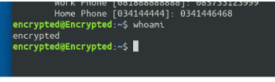
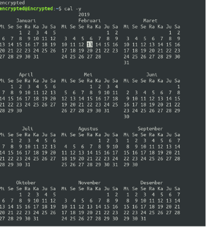

LAPORAN SISTEM OPERASI
Tugas 1 - Perintah Dasar Sistem Operasi Linux
Tugas 1
Oleh:
Hafidh Sajid Malik
TI-1D-09
Latihan
Ubahlah informasi finger pada komputer anda chfn
Lihatlah user - user yang sedang aktif pada komputer anda whoami 
Perintah apa yang digunakan untuk melihat kalender satu tahun penuh
Cal -yBagaimana pendapat anda dapat melihat manual dari perintah cal
Man cal
Bagaimana melihat perintah manual ls dengan kata kunci short
Man ls shortBagaimana tampilan untuk perintah
ls –a –ldanls –al?ls –a –lls –al
- Tampilkan semua file termasuk yang hidden file pada direktori /etc .
ls -a - Tampilkan semua file secara lengkap pada direktori /etc .
ls -l
Laporan resmi
| Perintah | Deskripsi | Format |
|---|---|---|
| Id | Perintah ini digunakan untuk melihat identitas diri sistem operasi ini | |
| date | Perintah ini digunakan untuk menampilkan tanggal dan waktu saat ini | |
| cal | Perintah ini digunakan untuk menampilkan kalender pada bulan ini | |
| Hostname | Perintah ini digunakan untuk menampilkan user id | |
| uname | Perintah ini digunakan untuk menampilkan jenis arsitektur sistem operasi | |
| w | Perintah ini digunakan untuk menampilkan list user yang aktif | |
| who | Perintah ini digunakan untuk menampilkan user yang diugnakan saat ini | |
| Whoami | Sebuah perintah yang digunakan untuk menampilkan nama user yang sedang digunakana | |
| finger | Perintah ini digunakan untuk menampilkan informasi finger | |
| chfn | Perintah ini digunakan untuk mengubah informasi finger | |
| Man ls | Perintah ini digunakan untuk menggunakan fitur manual | |
| clear | Perintah ini digunakan untuk menghapus layar | |
| Apropos | Fungsi perintah ini adalah untuk Mencari perintah – perintah atau file yang mengandung huruf yang dimaksud. | |
| ls | Perintah ini digunakan untuk menampilkan isi dari sebuah direktori | |
| file | Perintah ini digunakan untuk melihat jenis file ekstensi | |
| Cp | Perintah ini digunakan untuk menyalin sebuah fiile | |
| Cat fl | Perintah ini digunakan untuk melihat suatu isi file tanpa fasilitas melihat isi file dari atas | |
| Mv | Perintah ini digunakan untuk memindahkan file dan dapat juga digunakan untuk mengganti nama suatu file | |
| rm | Perintah ini digunakan untuk menghapus file | |
| Grep | Perintah ini digunakan untuk mencari kata di dalam suatu file |
Analisa latihan yang telah dilakukan Analisa masing masing summary (perintah system dasar dasar operasi linux) termasuk dalam deskripsi nomer 1 di atas
Kesimpulan dari praktikum ini Kesimpulan dari praktikum ini adalah kita akan mengenal lebih tentang perintah terminal pada sistem operasi linux.